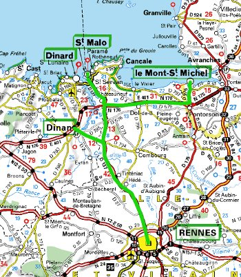

За това пътуване
Самолет: 3526 km
Автомобил: 610 km
Влак: 1124 km
Кораб: 42 km
Общa Статистика
Самолет: 29415 km
Автомобил: 26819 km
Влак: 3972 km
Кораб: 928 km
Общо: 61134 km
Градове: 52
Държави: 20
Континенти: 2
Северното крайбрежие на Бретания
Натоварихме се на един автобус и потеглихме на север. Първа спирка средновековното градче Динан. Разгледахме крепостта и се разходихме по малките старинни улички. В Динан се чувстваш като във филм за рицари. Удивително е как всичко се е запазило.

Рен - Динан - Мон Сен Мишел - Сен Мало -
Динар
След около два часа, потеглихме към морето. По пътя за Сен Мало минахме през Динард – живописен курортен град, със красиви сгради и чудесни плажове, само дето водата е много студена, почти не става за къпане. Разгледахме и електроцентралата използваща енергия от приливите и отливите. В Сен Мало ни настаниха в хостелче и на сутринта направихме разходка из града. Беше студено и ветровито, но това не ни попречи да пийнем безалкохолна бира – оказа се че най-евтината в менюто е такава. Видяхме крепостта и старите оръдия, малките павирани улици и площадчета. След обед потеглихме към абатството Мон Сен Мишел - градче разположено на малък скалист остров. Отново малки улички и високи средновековни кули, беше пълно с туристи, явно е една от атракциите на Франция.
Уморени потеглихме към Рен. Оставаше още една седмица учене и потегляхме към дома, но преди това ни предстоеше да видим Париж.

Виж Галерията от Северното крайбрежие на Бретания